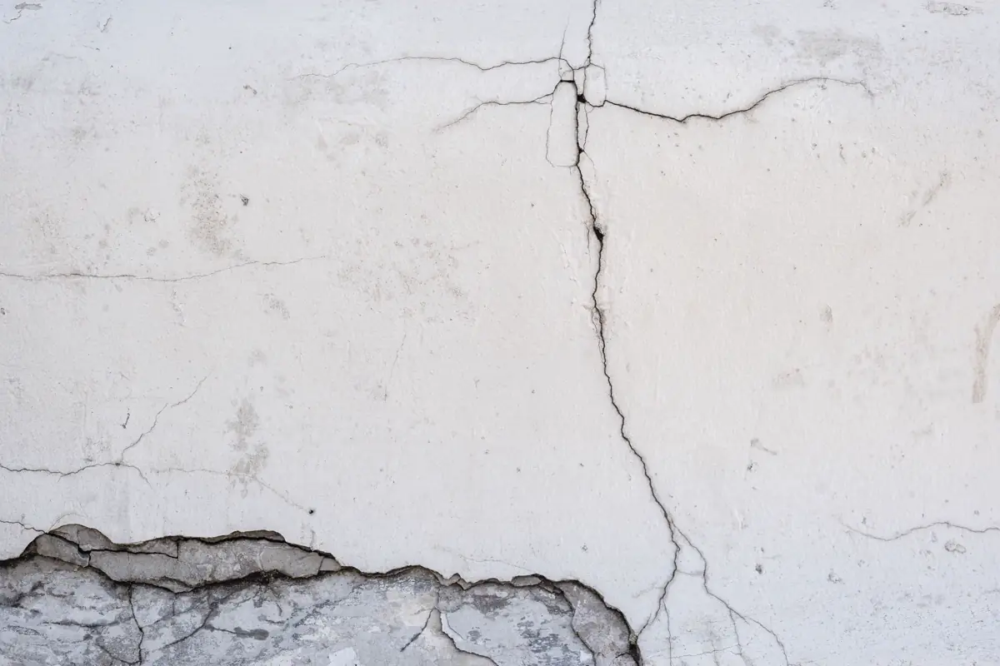

Por que vistoriar antes de receber as chaves
No dia da entrega, o comprador olha o acabamento com o corretor ao lado e meia hora de visita. O que passa despercebido — piso oco, ralo sem caimento, esquadria que deixa entrar água, tomada invertida — aparece depois da mudança, quando já há móveis planejados instalados e a discussão com a construtora fica mais difícil.
A vistoria técnica de recebimento faz o caminho inverso: cada ambiente é verificado com instrumento, e as pendências saem por escrito, com foto e localização, para a construtora corrigir antes ou logo depois da entrega. Com dezenas de empreendimentos sendo entregues por ano em Vila Velha, Vitória e Serra, é o momento em que o comprador tem mais força para exigir reparo.
Equipe técnica pronta para atender toda a demanda em Vitória, Vila Velha, Serra, Cariacica e região: o orçamento, o agendamento e o acompanhamento ficam centralizados na Axial Engenharia, do primeiro contato à entrega do documento.
O que é verificado
| Sistema | Verificação | Instrumento |
|---|---|---|
| Pisos e revestimentos | Peças ocas, trincadas, desniveladas; rejunte | Martelo de borracha, régua |
| Caimento de áreas molhadas | Água escoa para o ralo em box, varanda e área de serviço | Nível e teste com água |
| Paredes e tetos | Fissuras, prumo, esquadro, manchas de umidade | Prumo, esquadro, medidor de umidade |
| Esquadrias | Abertura, vedação, trincos, vidros, borrachas | Inspeção e teste de estanqueidade |
| Elétrica | Tomadas, polaridade, disjuntores identificados, DR | Testador de tomada |
| Hidrossanitária | Pressão, vazamento, registros, sifões, descarga | Inspeção e teste de uso |
| Louças, metais e bancadas | Fixação, trincas, vedação com silicone | Inspeção |
Prazos de garantia que valem depois da entrega
O Código de Defesa do Consumidor dá 90 dias para reclamar de vício aparente a partir da entrega (art. 26) e, para vício oculto, conta o prazo a partir de quando o defeito aparece. O Código Civil mantém a responsabilidade do construtor por cinco anos pela solidez e segurança da obra (art. 618). A ABNT NBR 17170 recomenda prazos de garantia por sistema, e a NBR 15575 define o desempenho mínimo esperado.
Por isso o relatório de pendências feito na entrega vale também depois: ele marca a data em que cada problema foi apontado. Defeito que aparece meses depois — infiltração na fachada, trinca que cresce — já é assunto de diagnóstico de patologia ou de inspeção predial do condomínio.

Comprou na planta e vai reformar?
Quebrar parede, trocar piso ou mexer em ponto de água logo após a entrega exige plano de reforma com responsável técnico, conforme a NBR 16280. Reformar antes de registrar as pendências da construtora também apaga a prova do defeito original — a ordem certa é vistoriar, cobrar o reparo e só então reformar.
Perguntas frequentes sobre vistoria de entrega
Posso recusar o recebimento se houver defeito?
Você pode registrar as pendências no termo de recebimento ou em documento à parte e exigir o reparo. Recusar as chaves é medida extrema e depende do contrato; o caminho usual é receber com ressalvas por escrito, apoiadas no relatório técnico.
Quanto tempo leva a vistoria de um apartamento?
Um apartamento de dois ou três quartos leva de duas a três horas. Cobertura e casa maior levam mais. O relatório com fotos sai em poucos dias úteis.
A construtora é obrigada a corrigir o que for apontado?
Vícios aparentes e defeitos de execução são de responsabilidade da construtora dentro dos prazos legais e contratuais. O relatório técnico com fotos e localização facilita a cobrança e o acompanhamento do reparo.
Vale a pena vistoriar imóvel usado antes de comprar?
Sim, com outro foco: além do acabamento, a vistoria de imóvel usado procura infiltração, trinca estrutural, instalação elétrica antiga e reformas sem projeto, que mudam o valor da negociação.
O condomínio também pode fazer vistoria de entrega?
Pode e deve: na entrega das áreas comuns, a vistoria registra as pendências de fachada, cobertura, garagem, lazer e instalações para cobrança coletiva à construtora.
Vistoria de entrega na Grande Vitória
Vistoria de recebimento de apartamentos e casas novas:
A entrega das chaves já tem data?
Mande o empreendimento, a metragem e a data. Agendamos a vistoria para antes da assinatura.